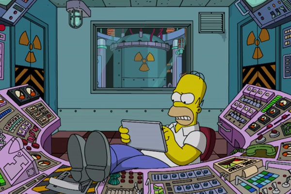

Welcome to my webpage!
I'm currently an employee at Cornell University. I work at Wilson Lab, which houses Cornell's synchrotron, as one of the people operating it on a day-to-day basis. That means that I am responsible for manning the control-room making sure that the particle beams we generate are running smoothly. Recently I've also begun taking programming courses at Cornell (courtesy of the university's generous employee benefits) and moved into doing some software development at work (mostly in Java). The change has been fantastic as I continue to discover how much I enjoy programming and computer science!
Feel free to check out my résumé or my (so-far-non -existant ☹) portfolio. Check out the Code Musings page, where I'll keep a short journal recording my experience of learning to create websites in CS1300. If you want to learn a bit more about me, see the About Me page. If you have some interesting project, information or just want to get in touch, please go to Contact.